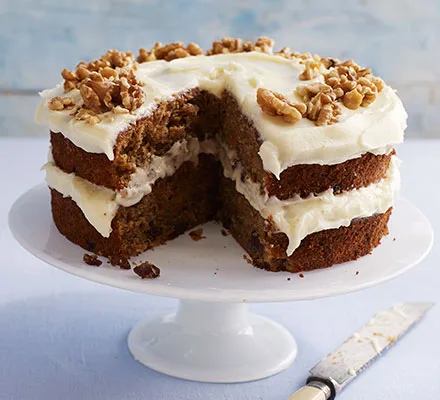

Mother in Law's Carrot Cake

Description
This amazing carrot cake is made with lots of love and carrots. Make sure you don't
have a family history of tennis elbow before enduring this quest without a proper
foodprocessor as you will have to grate a lot of carrots. This is the main secret
to making the cake as juicy as possible. Approximate baking time including cooking
and cooldown: 4 hours (2 hours if you live in Norway or another place with arcic
climate).
Ingredients
Cake base
- 4 eggs
- 1 cup of sugar
- 2 cups of flour
- 2 teaspoons of baking soda
- 2 teaspoons of cinnamon
- 1 teaspoon of salt
- 1 teaspoon of vanilla sugar
- 1 cup of melted butter (could be replaced by soybean oil, but not recommended)
- 5 cups of grated carrots
Topping
- 200g cream cheese(natural)
- 150g powdered sugar
- 125g room tempered butter
- 1 table spoon fresh pressed lemon juice
Steps
- Turn on oven at 180 degrees Celcius (or spinn the temperature handle at random if you use Farenheit)
- Mix eggs and sugar to eggnog
- Apply all the dry ingredients to eggnog
- Gracefully stir the butter and carrots into the mix
- Pour the batter into a cake form (24cm diameter or bigger)
- Bake in oven for approximately 45 minutes at 180 degrees Celcius
- Mix the topping ingredients together
- Wait for the cake to cool down and apply the topping
- Enjoy!
- Enjoy!
- Oh, and did I say enjoy!?
Back to Homepage